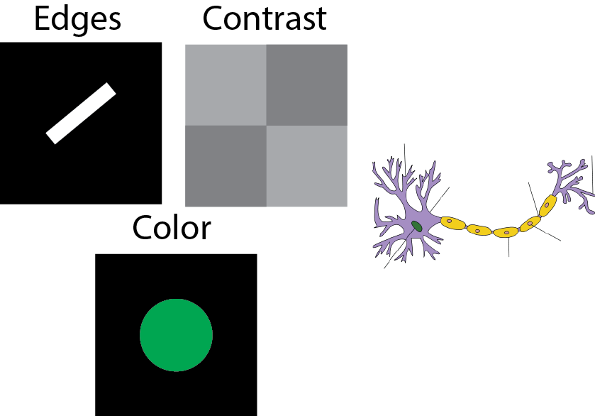

Simple cells, complex cells, and deep neural networks
Introduction
In this lab we will be exploring some of the details of the simple and complex cells which we learned about in lecture. You will be running some example code which will show you how different cells “see” the world and eventually using a deep neural network similar to those that Facebook, Google, Tesla, and Apple are using to identify you in your images, control their driverless cars, and understand your voice when you ask your phone for information.
Learning goals
After this lab you should have a better understanding of the following:
- How simple and complex cells act as filters, only allowing a certain kind of information in a scene to pass through.
- How representations in the cortical visual hierarchy become more complex as you proceed deeper through cortical areas.
- Be able to explain why invariance is an important property to have in the highest levels of visual cortex.
Section Labs
This is our first section in Psych 50 so we want to take a brief moment to orient you to how these lab tutorials work. Your TA should have aleady mentioned that we will have a mixture of open discussions, demonstrations, and lab tutorials. The lab tutorials are an introduction to computation models as a tool for understanding our brains, and we use programming (in this case javascript) to run our models. You'll get the most out of these labs if you work together with a partner both on the same computer and ask for help from your neighbors or the TA if you get stuck. In today's lab you'll just be going through examples that we've made for you, but in future labs you will have to write some of the program yourself. Let your TA know if you have questions!
If you already know how to program you'll still want to go through all of the tutorial, but if you get done early check out the advanced topics at the end which include some programming challenges. Anything in this section is bonus, you will not be tested on your knowledge of programming.
Part 1: Simple cells
You should recall from lecture that a simple cell is a neuron in the early visual cortex (part of the occipital cortex) which is sensitive to a few features, including: edges, contrast, and color.
The first thing we're going to do is look at how a simple cell might "see" an image. Remember that a neuron in this part of cortex has a receptive field, which is the area of visual space that the neuron can "see" and react to. Simple cells will be activated whenever they see for example, edges. The first thing we're going to do in this lab is try to design a receptive field to detect edges. Eventually we'll build up to receptive fields that detect much more complex features, like cats or dogs.
Design a receptive field
The next section is a bit like a game, you're going to design a receptive field and test it on the image shown. Your goal is to create an edge detector that can find vertical lines. We've set this up just like the Hubel and Wiesel experiment, but we're letting you move your receptive field around the image (with your mouse), while a real neuron would be fixed in one place. The top right panel shows the voltage of this neuron as if we were recording with an electrode. When your receptive field is well activated by what it "sees" you'll hear the neuron firing (turn up your sound!) and you'll see the spikes in the window on the top right. To change your receptive field simply click anywhere in the 7x7 grid on the top left to cycle between black, grey, and white. The colors indicate how much the neuron will be activated by luminance in that part of its receptive field.
Receptive field
Response
Image